Hello!! My name is Bill Doyle and I must say today proudly that I chose the correct profession for me. It’s a great job! However, a "World Wide Company Covid layoff" in early 2020 (and work stoppage as nobody was hiring anyone then) eliminated my situation and forced me to regroup to retrain and stay sharp as I "rebranded" me for today. (I have learned website design and more.) I am extremely confident I will be back in this awesome profession again soon.
"You did great things in your life and you earned your happiness, so live always in that mindset as you don't dwell on the bad stuff. If you do that, then you are indeed Living in Your Good!" - I SAID THIS...

It's important to note that I studied Fine Arts (1988-1990) at the County College of Morris (CCM) and Graphic Design (1990-1992) at Montclair State University, both in Northern NJ, to earn a AA Degree and BA Degree, respectively.
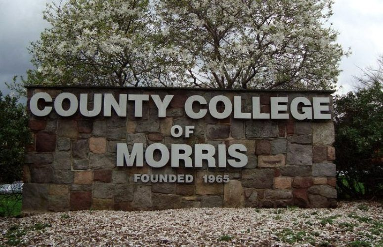

From 2020 to Present, I took on a relatable job as an online shopper (see footer below) but from 1997 to 2019 I worked as a Graphic Designer which I would love to explain each stop starting with A&P. Thank you for your time.
THE FUTURE IS NOW! LET'S CHAT! EMAIL ME
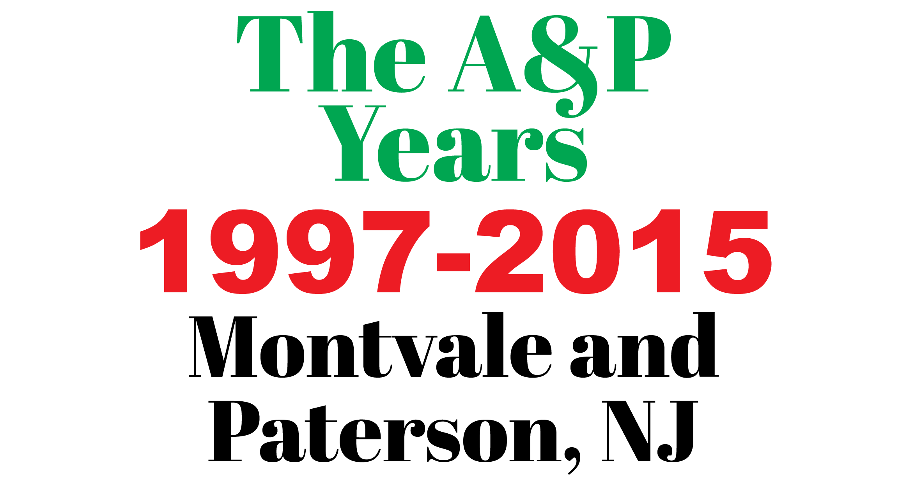
I was a Senior Graphic Designer who was the top assistant to the Production Manager and Creative Director on the production side of things. My job was to create and correct "print" circulars (and more) that promoted store sales on a weekly basis under tight deadlines. Fully armed, I managed a group of ten Artists when that time was needed and would report in to the Production Manager and Creative Director as it would keep them in the loop.
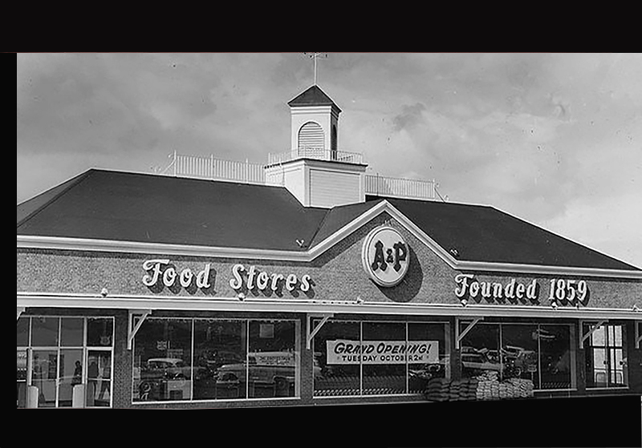

I also met with other stakeholders in other departments, spoke to printers and distributors when needed, trained staff and prepared documents for release like run lists when that time came. I also designed and corrected circular pages, ROP’s, bagstuffers, signage and even had some time for lunch when I wasn’t proofreading. It is important to note that the Supermarkets Waldbaum's and Superfresh were part of the A&P Family too which I had a handle on as well doing the same responsibilities.
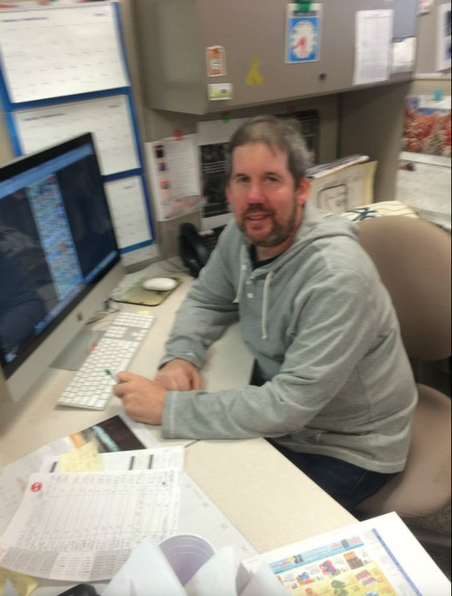
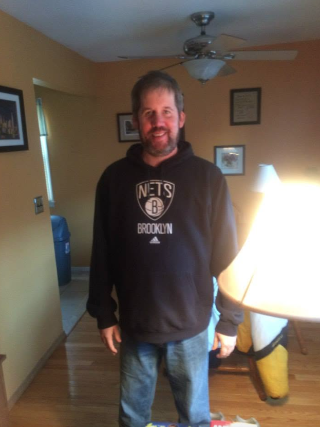
In the last year there before going out of business in 2015, I took on the role of Production Manager. So it's pretty cool for me to live with the fact that I was the last Production Manager A&P ever had, dating back to 1859 when this proud company began. (1859-2015)
A mention from Cheryl Lucania, Production Manager at A&P Corporate Offices:
"Bill was task oriented with strong attention to detail."
THE FUTURE IS NOW! LET'S CHAT! EMAIL ME
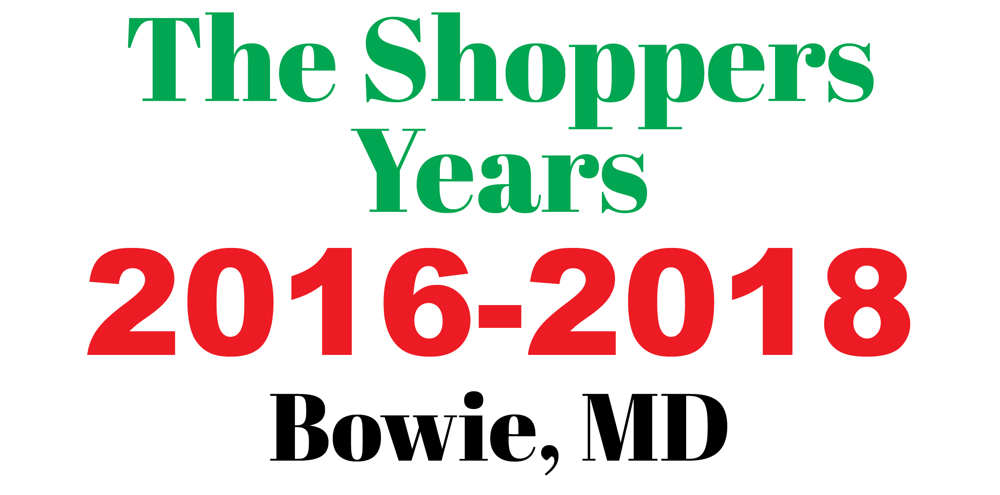
After A&P, I found myself to have the great fortune to join the design team for Shoppers Supermarket (Super Valu) in Bowie, MD. I worked for Ivie & Associates officially. (based out of Flower Mound, TX which is by Dallas.) FYI- I have learned they were acquired by Quad/Graphics after my employment with Ivie & Associates.
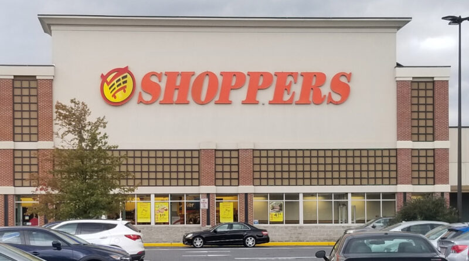
Ivie assigned me to this satellite location by Washington, D.C. Here also, I designed circulars and created more publications which added value daily. I even designed pages for Shop 'n Save and Farmfresh as well as spearheaded the El Tiempo Latino Full Page Newspaper Ad project during this time. I did the English Ad and they translated it into Spanish.
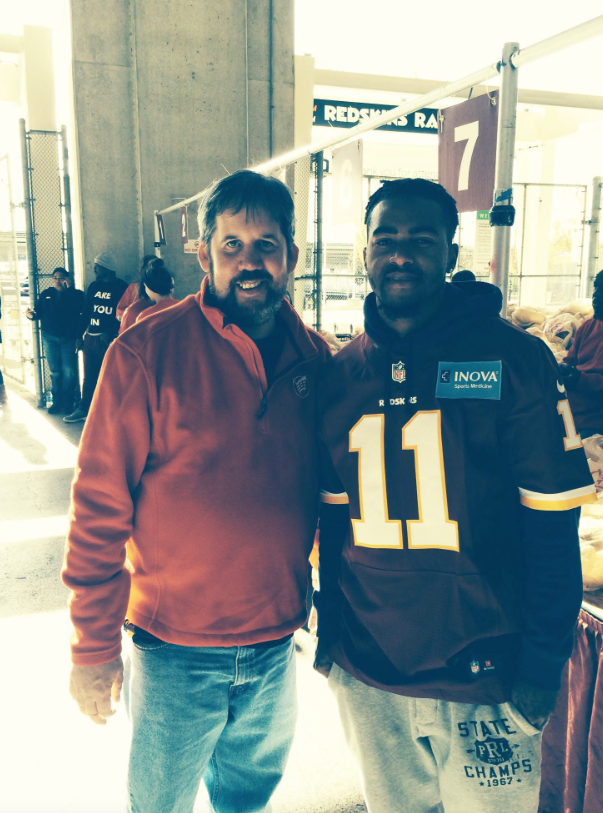
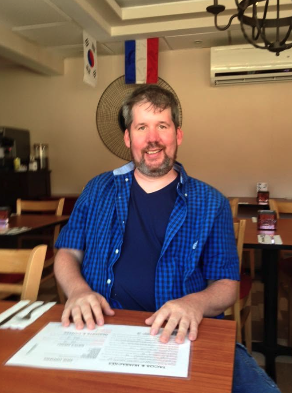
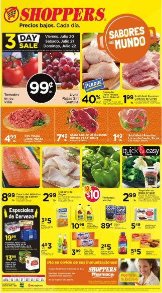
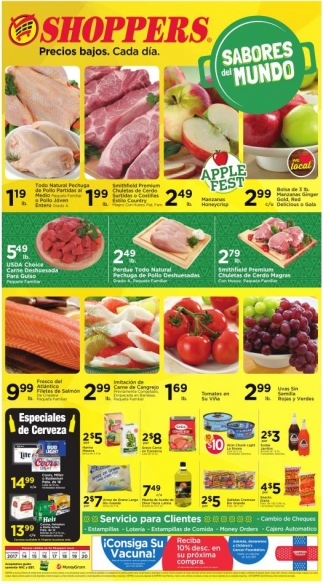
I was only there for two years because they packed up this satellite location to join again the Shoppers Corporate Office and “moved shop” to MN. They already had a full staff in MN so I moved back north to join forces with Clark Printing in Fairfield, NJ as my next adventure awaited...
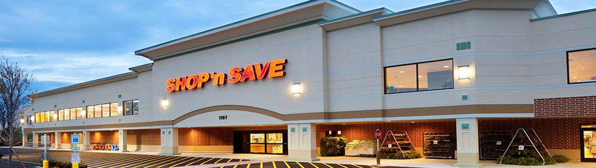
As stated by Ivie & Associates (Stewardship Award) : “As a winner, you demonstrated the leadership role you play with your team regarding culture. You displayed a positive attitude and encouraged others to achieve their personal best.”
A mention from Darin Warren, Director of Marketing at Ivie & Associates:
"I throughly enjoyed my time working with Bill, and truly came to know him as an asset to my team. He is creative, timely and dependable. Bill was always inspired by a challenge and often exceeded expectations in his designs. Along with his undeniable talents, Bill has always been an absolute joy to work with. He was a real asset to the team and collaborated well with his teammates as well as the client."
THE FUTURE IS NOW! LET'S CHAT! EMAIL ME
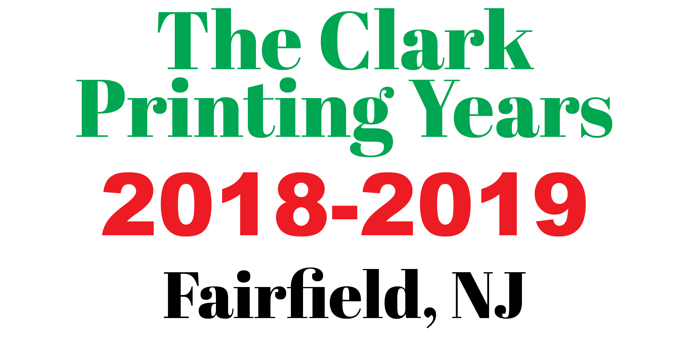
Clark Printing was a great experience because it had many exciting projects to do and had many talented artists to do them. Once again, I designed circulars as well as store signs and more on a weekly basis. I did advertisements for Metropolitan, Giunta’s and Pioneer Supermarkets (based in the NYC area) and had great success as my daily efforts increased production and even lightened colleagues work load when it was extremely busy.
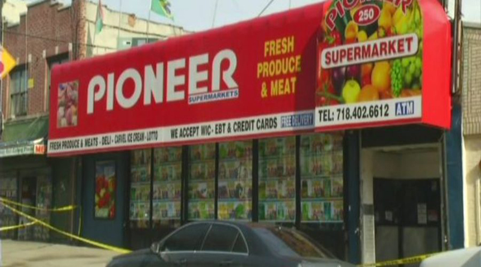
Unfortunately, this moment ended because Clark Printing had to cut its workforce by three to balance their books in late 2019 and I was one of the newest hires. (Seniority) However, I left on very good terms with a very possible return when things got better for them, but the Covid 19 Pandemic hit full swing everywhere in early 2020 as massive layoffs and work stoppages happened all over. Nobody was hiring anyone anywhere unfortunately. We just had to "mask up" and wait. In conclusion, it closed that glorious window for good for me to come back to Clark Printing as we both moved on.
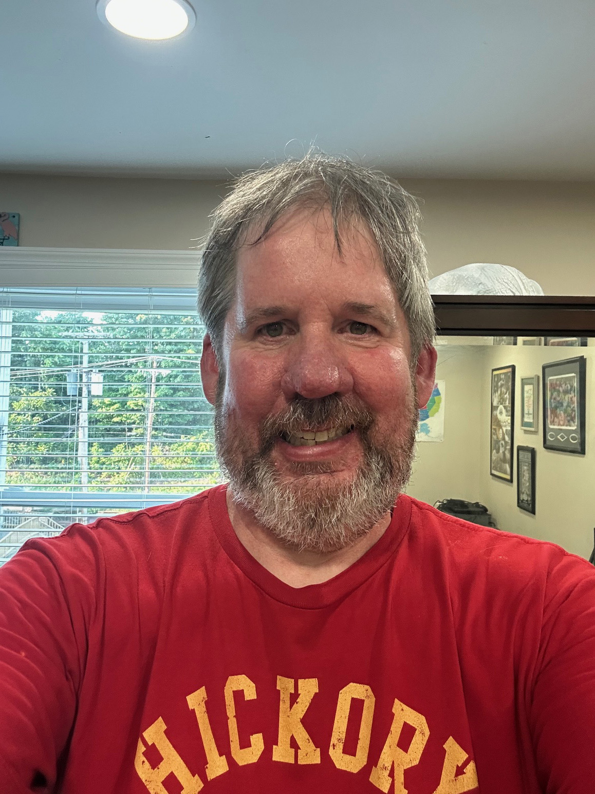
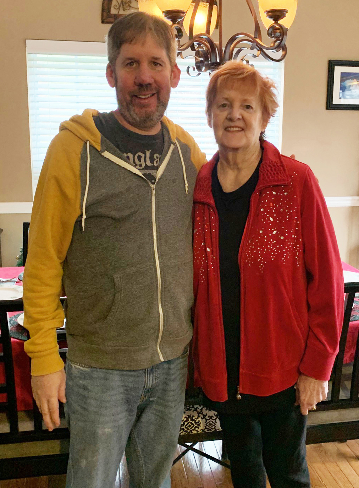
A mention from Joanne Scielzo, Pre-Press Manager at Clark Printing:
"Bill is honest, dependable and incredibily hard-working. His knowledge in production was a huge advantage to our entire office. Bill has always been an absolute joy to work with. He is a true team player, and always managed to complete his work duties along with other assignments he was asked to pick up."
THE FUTURE IS NOW! LET'S CHAT! EMAIL ME